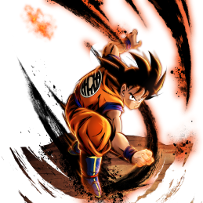
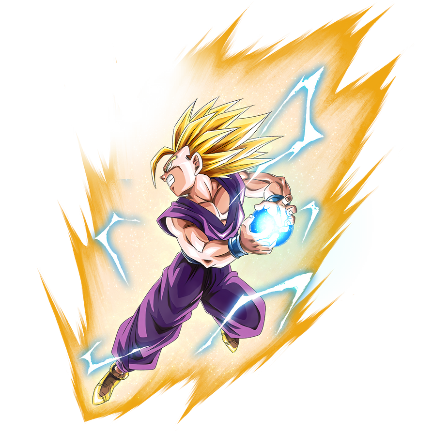
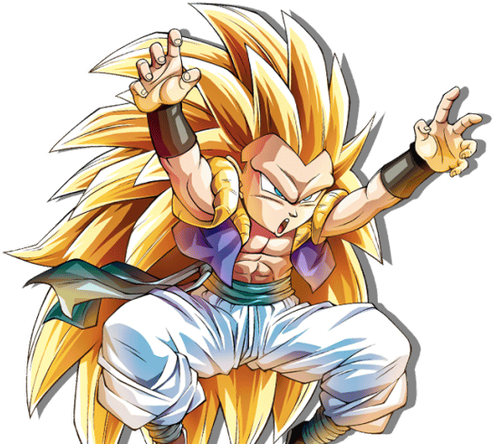

-
Goku
Poder: +8.000
Goku Saga Sayajin
A Saga Saiyajin começa cinco anos após os eventos mostrados no fim de Dragon Ball. Uma reunião na Casa do Kame reúne Goku com seu antigo mestre, Mestre Kame, e seus amigos Kuririn e Bulma, que não haviam o visto em cinco anos. Goku surpreende a todos trazendo junto seu filho de quatro anos, Gohan.
-
Gohan
Poder 4.200.000.000
Kid Gohan SSJ2
Super Saiyajin 2 é duas vezes mais forte que o Super Saiyajin normal, então a forma multiplica o poder normal do Saiyajin por 100x vezes de sua forma normal. De acordo com Goku, Gohan tecnicamente se transformou pela primeira vez nesta forma durante seu treinamento na Sala do Tempo.
-
Gotenks
Poder 23.000.000.000
Gotenks SSJ3
Gotenks é um lutador convencido que acredita que seu poder é suficiente para derrotar qualquer um, até quando ele está quase perdendo; isto é devido ao aumento massivo de poder durante a fusão, criando um guerreiro assim como a fusão de seus pais.